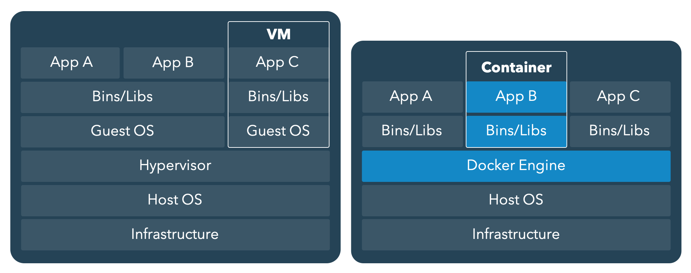

Context
Research compendiumfor file organization- Writing
functionsfor code optimization Quarto|RMarkdownfor literate programminggitfor version controlGitHubfor sharing & collaborationrenvto freeze packages (and their versions)
What about the computational environment?
- Software and system libraries
- Operating system
Context
Context

Context
Introducing Docker

- Free and open-source software
- Containerization technology
- Platform for developing, shipping, and running applications
- Docker containers are lightweight, portable and isolated from the underlying infrastructure and other containers

Concepts
Dockerfile
the blueprint
- A plain text file
- A set of instructions to create a custom image
- Can be shipped w/ the compendium
Concepts
Dockerfile
the blueprint
- A plain text file
- A set of instructions to create a custom image
- Can be shipped w/ the compendium
Docker Image
the template
- Built from a Dockerfile
- A read-only (immutable) template used to create containers
- Can be shared on Docker Hub
Concepts
Dockerfile
the blueprint
- A plain text file
- A set of instructions to create a custom image
- Can be shipped w/ the compendium
Docker Image
the template
- Built from a Dockerfile
- A read-only (immutable) template used to create containers
- Can be shared on Docker Hub
Docker Container
the executive instance
- Generated from a Docker image
- Contains the entire package needed to run the application
- User interacts only w/ containers
A Docker image is immutable and will always create the same container
Where can I find Docker images?
Docker Hub: the Official Docker registry
Where can I find Docker images for ?
The Rocker project
Download a Docker image
Download a Docker image
docker pull will download a Docker image from Docker Hub
Download a Docker image
docker pull will download a Docker image from Docker Hub
For a better reproducibility, specify the tag (version) of the image
Download a Docker image
docker pull will download a Docker image from Docker Hub
For a better reproducibility, specify the tag (version) of the image
With Docker it’s easy to install different versions of the same software
Run a Docker container
Example with the Docker image rocker/r-ver
The flag -it allows you to interact w/ the container
By default, the rocker/r-ver image provides direct access to
R version 4.4.2 (2024-10-31) -- "Pile of Leaves"
Copyright (C) 2024 The R Foundation for Statistical Computing
Platform: x86_64-pc-linux-gnu
>We are using inside a Docker container and we can work as usual.
Type q() to quit and stop the container.
Important
- Data created inside a Docker container do not persist: the
README.mdfile and thedevtoolspackage will be lost when closing the container. - Docker containers are isolated: containers don’t have access to user files (Guest OS)
Run a Docker container
Example with the Docker image rocker/r-ver
Run a Docker container
Example with the Docker image rocker/r-ver
Instead we can access to a Linux Shell by adding bash and open later from the container by calling R
root@c038f516feb1:/#
root@c038f516feb1:/# cat /etc/issue
## Ubuntu 24.04.1 LTSWe are using bash inside a Docker container and we can work as usual.
## Update system ----
apt update && apt upgrade -y
## Install a software ----
apt install figlet
## Use new tool ----
figlet 'Inside Docker' ___ _ _ ____ _
|_ _|_ __ ___(_) __| | ___ | _ \ ___ ___| | _____ _ __
| || '_ \/ __| |/ _` |/ _ \ | | | |/ _ \ / __| |/ / _ \ '__|
| || | | \__ \ | (_| | __/ | |_| | (_) | (__| < __/ |
|___|_| |_|___/_|\__,_|\___| |____/ \___/ \___|_|\_\___|_| Type exit to quit bash and stop the container
Container monitoring
Use docker ps to check the status of your containers
CONTAINER ID IMAGE COMMAND CREATED STATUS PORTS NAMES
f466117bb7f3 rocker/r-ver:4.0.1 "R" 9 seconds ago Up 8 seconds beautiful_poitras
cb1f8498bc55 rocker/r-ver:4.4.2 "bash" 21 seconds ago Exited (0) 17 seconds ago zealous_borgContainer management
Some useful commands to manage your containers
Use docker start to restart a stopped container
Volume mapping
- Links a Docker container to a persistent storage location on the host system
- Allows data to persist even after the container is stopped or removed
- Enables data sharing between containers and the host system
Any file created in the host volume (directory) will be accessible by the container through the linked volume.
And vice versa.
RStudio image
Another example: the Docker image rocker/rstudio
Contains RStudio Server and enables you to run the RStudio from your web browser
On a web browser visit http://localhost:8787
- Username is
rstudio - Password is displayed in the terminal
RStudio image
Press CTRL + C in the terminal to stop the container
Dockerfile
A Dockerfile is a blueprint (recipe) defining how to create a Docker image
- A plain text file
- A set of instructions to create a custom image
- Always based on another Docker image
- The Dockerfile will be shipped w/ the research compendium
Just add a file named Dockerfile at the root of your compendium
Dockerfile
The instruction FROM tells Docker what base image to start from
Dockerfile
The instruction WORKDIR sets the working directory inside the container
Dockerfile
The instruction COPY copies files from your computer inside the image
Dockerfile
The instruction RUN executes shell commands inside the container (software installation, configuration, etc.)
Dockerfile
The instruction RUN executes shell commands inside the container (software installation, configuration, etc.)
## Base image ----
FROM rocker/rstudio:4.4.2
## Working directory ----
WORKDIR /home/rstudio
## Copy files ----
COPY . /home/rstudio
## Change working directory owner ----
RUN chown -R rstudio:rstudio /home/rstudio
## Install R packages ----
RUN R -e "install.packages('ggplot2', repos = c(CRAN = 'https://cloud.r-project.org'))"Install packages on the fly
Dockerfile
The instruction RUN executes shell commands inside the container (software installation, configuration, etc.)
## Base image ----
FROM rocker/rstudio:4.4.2
## Working directory ----
WORKDIR /home/rstudio
## Copy files ----
COPY . /home/rstudio
## Change working directory owner ----
RUN chown -R rstudio:rstudio /home/rstudio
## Install R packages ----
RUN R -e "install.packages('devtools', repos = c(CRAN = 'https://cloud.r-project.org'))"
RUN R -e "devtools::install_deps()" Install packages listed in the DESCRIPTION file
Dockerfile
The instruction RUN executes shell commands inside the container (software installation, configuration, etc.)
## Base image ----
FROM rocker/rstudio:4.4.2
## Working directory ----
WORKDIR /home/rstudio
## Copy files ----
COPY . /home/rstudio
## Change working directory owner ----
RUN chown -R rstudio:rstudio /home/rstudio
## Install R packages ----
RUN R -e "install.packages('devtools', repos = c(CRAN = 'https://cloud.r-project.org'))" \
&& R -e "devtools::install_deps()" Merge RUN instructions to lighten the image
Dockerfile
The instruction RUN executes shell commands inside the container (software installation, configuration, etc.)
## Base image ----
FROM rocker/rstudio:4.4.2
## Working directory ----
WORKDIR /home/rstudio
## Copy files ----
COPY . /home/rstudio
## Change working directory owner ----
RUN chown -R rstudio:rstudio /home/rstudio
## Install R packages ----
RUN R -e "install.packages('renv', repos = c(CRAN = 'https://cloud.r-project.org'))" \
&& R -e "renv::restore()" Install packages with renv
Dockerfile
The instruction RUN executes shell commands inside the container (software installation, configuration, etc.)
## Base image ----
FROM rocker/rstudio:4.4.2
## Working directory ----
WORKDIR /home/rstudio
## Copy files ----
COPY . /home/rstudio
## Change working directory owner ----
RUN chown -R rstudio:rstudio /home/rstudio
## Install R packages ----
ENV RENV_VERSION 1.0.11
RUN R -e "install.packages('remotes', repos = c(CRAN = 'https://cloud.r-project.org'))" \
&& R -e "remotes::install_github('rstudio/renv@${RENV_VERSION}')" \
&& R -e "renv::restore()" Install packages with a frozen version of renv
With this, renv will download and install the requisite packages as appropriate when the image is created. Any new containers created from this image will hence have those packages installed at run-time.
The .dockerignore
Like git it’s possible to tell Docker to ignore files when build images (instruction COPY).
Create a new file named .dockerignore at the root of the project
Build an image
To build a Docker image from a Dockerfile use the command docker build
## List Docker images available locally ----
docker images
## REPOSITORY TAG IMAGE ID CREATED SIZE
## rocker/r-ver latest c2909963ee34 12 days ago 938MB
## rocker/r-ver 4.4.2 c2909963ee34 12 days ago 938MB
## rocker/r-ver 4.0.1 3c5754bb465f 20 months ago 854MB
## image_name latest 999z9z99zzz9 1 minute ago 999MBVisit http://localhost:8787/ on a web browser
Docker cheatsheet
## Images ----
docker build -t "{{ IMAGE }}" . # Build an image from a Dockerfile
docker search {{ IMAGE }} # Search for an image on Docker Hub
docker pull {{ IMAGE }} # Download a Docker image
docker pull {{ IMAGE }}:{{ TAG }} # ... with a specific version
docker images # List local images
docker rmi {{ IMAGE }}:{{ TAG }} # Delete a local image
## Container creation ----
docker run -d {{ IMAGE }}:{{ TAG }} # Start a new container (in the background)
docker run -it {{ IMAGE }}:{{ TAG }} # Start a new container (interactive mode)
docker run -it --name "{{ CONTAINER }}" {{ IMAGE }} # Set a custom name
docker run --rm -it {{ IMAGE }}:{{ TAG }} # Delete container after stopped
docker run -it -v {{ DIR }}:{{ DIR }} {{ IMAGE }} # Volume mapping
docker run -it -p {{ PORT }}:{{ PORT }} {{ IMAGE }} # Port mapping
## Container monitoring ----
docker ps # List containers
docker ps -a # List containers (stopped included)
docker stats # Containers statistics
## Container management ----
docker start {{ CONTAINER }} # Re(start) a container
docker exec -it {{ CONTAINER }} # Re-enter in a container
docker stop {{ CONTAINER }} # Stop a container
docker rm {{ CONTAINER }} # Delete a container